How it works
An agent writes something down. Follow it from that moment to the point where a colleague in another office can use the reviewed version. The journey below follows the planned release-3 and release-4 workflow through an illustrative correction: “the payments sandbox rate-limits per API key, not per account — space retries 2 s apart, not 30.”

The release-3 review workflow, extended to shared team knowledge in release 4.
A correction carries its source evidence, intended use and version. Shared claims identify the verified contributor and a required team, validated against membership at submission. An agent retains its own workload identity.
Accountability: later team moves preserve the original attribution. Ownership transfer and access grants are separately authorized decisions.
The proposed claim enters a separate review store. The scanner checks for credentials, injection and executable content. Reviewers receive the evidence needed for their task; ordinary shared retrieval uses the admitted collection.
Pending work: a scan-cleared writer view is explicitly pending review. It does not confer shared approval.
A non-author AI reviewer gives a trust score from 0–100 using a versioned rubric. Its rationale, evidence, counterevidence and reviewer provenance are bound to the exact revision. The score informs review; it is neither an approval nor a probability of truth.
Evidence first: missing support and known disagreements stay visible to the next reviewer. A high score never automatically approves a claim.
A distinct verified, authorized non-author reviewer records APPROVE or REJECT, with reasons and evidence. This stage has no numeric score. Approval means production-ready for the declared scope, version and use, with required hard checks satisfied. Execution permissions remain with the systems performing the work.
Human authority: human review is optional under the selected policy. An explicit authorized human override remains binding until an authorized human releases or replaces it; ordinary human approval is a separate decision.
Publication makes the approved revision available within its permitted scope. Connected deployments exchange contributions and signed outcomes over authenticated HTTP; each receiving authority applies its own rules. These deployment boundaries are separate from the two review stages.
Currentness: every use checks current access, applicability, expiry and authority. A challenge, withdrawal or superseding revision changes what is eligible while preserving the decision history.
Claims follow a development lifecycle: proposal, assessment, approval, publication and ongoing maintenance. Changing the body or evidence creates a new revision and review. A context change triggers policy re-evaluation; approval never silently expands to a new use. Consolidation proposes a successor rather than editing an approved claim in place.

Review before publication; current eligibility at retrieval.
Retrieval ranks the claims the caller is currently entitled to use. Scope, validity and authority checks also apply to direct lookups, exports and cached results. Model review happens before publication; its cost is separate from these read-time checks.
Transcripts, tool output and logs pass straight through — they are records of what happened, not claims about the world. Only claims wait for review, which is a small fraction of what an agent writes.
In our own measurements an agent produced roughly ninety times more records than claims. Reviewing claims separately from records concentrates the review budget. Those numbers come from our machines, so treat them as illustration rather than a population finding.